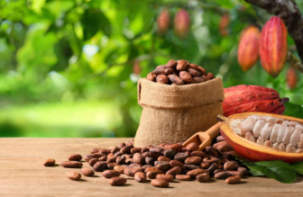
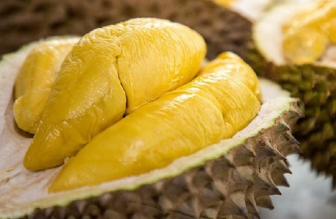
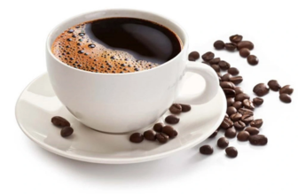
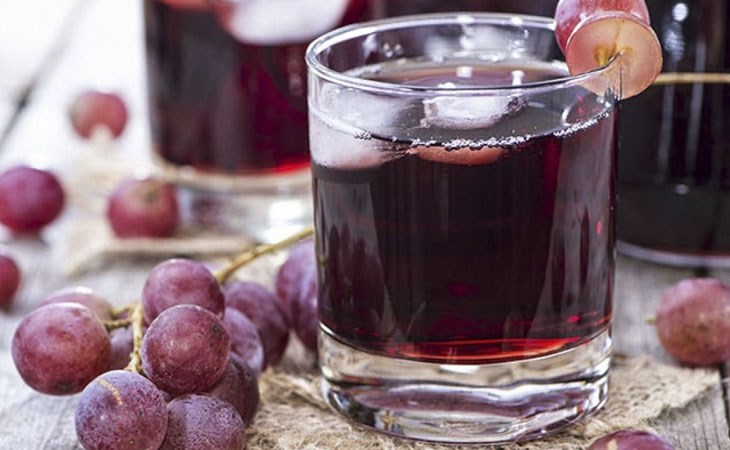

Tác Dụng Cacao Đối Với Sức Khỏe
Tác dụng của cacao đối với sức khỏe là gì? Uống nhiều có tốt không? Sử dụng cacao thế nào để tốt cho sức khỏe?

Bí Quyết Chọn Sầu Riêng Ri6 Chín Tự Nhiên và Thơm Ngon
Nguồn gốc, bí quyết để chọn sầu riêng Ri6 sao cho thơm ngon?

Lợi Ích Và Tác Hại Của Cà Phê?
Cà phê mang lại nhiều lợi ích sức khỏe nhưng nếu tiêu thụ quá mức có thể để lại những tác hại tiêu cực.

Rượu nho có tác dụng gì? Lợi ích khi uống rượu nho đúng cách
Rượu nho có lợi hay có hại đối với sức khỏe? Sử dụng rượu nho thế nào để có tác dụng tốt nhất?

Lợi Ích Sức Khỏe Từ Táo
Táo không chỉ ngon mà còn cung cấp nhiều vitamin và khoáng chất tốt cho sức khỏe.

Mật Ong Và Những Điều Cần Biết
Mật ong tự nhiên là một siêu thực phẩm, giúp tăng cường sức khỏe và làm đẹp da.